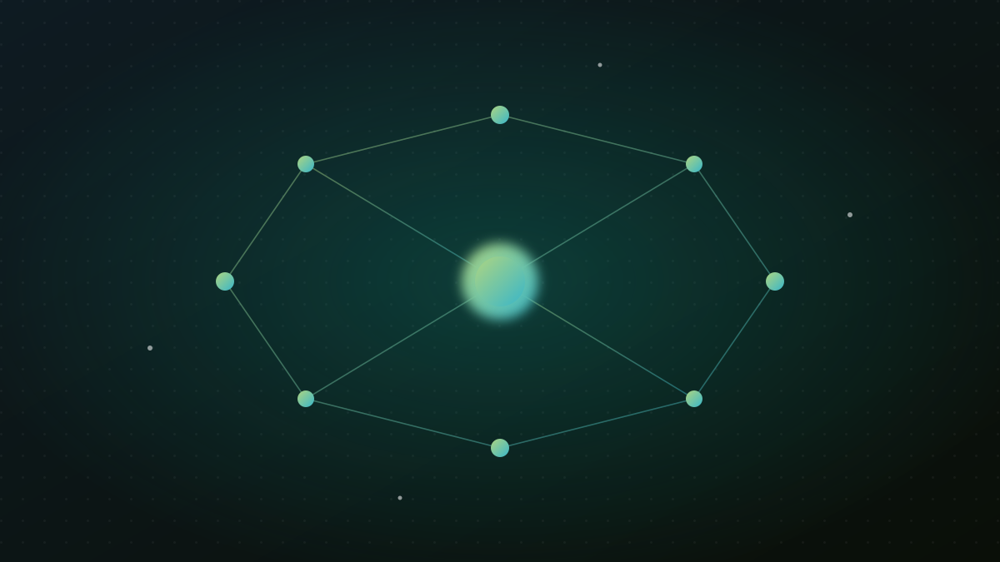

Büyük dil modeli (LLM) nedir?

“LLM” kısaltmasını son birkaç yılda her yerde duyar olduk. Açılımı Large Language Model, yani büyük dil modeli. ChatGPT, Gemini, Claude gibi araçların hepsi birer LLM. Peki bu tam olarak ne demek? Hiç teknik geçmişiniz olmasa bile anlayacağınız şekilde anlatayım.
“Bir LLM, devasa miktarda metni okumuş ve ‘bir sonraki kelime ne olmalı?’ sorusunu inanılmaz iyi yanıtlamayı öğrenmiş bir tahmin makinesidir.”
En basit hâliyle
Telefonunuzun klavyesindeki kelime tahminini düşünün. “Bugün hava çok…” yazınca size “güzel”, “sıcak”, “soğuk” önerir. LLM de aslında aynı işi yapar — ama milyonlarca kitap, makale ve internet sayfası okuyarak öğrendiği için tahmini o kadar isabetli olur ki, koca koca paragrafları, kodları, şiirleri akıcı biçimde üretebilir.
İşte bu kadar. “Bir sonraki kelimeyi tahmin et” fikrini yeterince büyük ölçekte yaparsanız, ortaya dili gerçekten kullanabilen bir sistem çıkıyor.
“Büyük” derken?
İki anlamda büyük:
- Çok fazla veri: Model, devasa miktarda metinle eğitilir.
- Çok fazla parametre: Parametreler, modelin öğrendiği “ayar düğmeleri” gibidir; milyarlarcası olabilir. Ne kadar çok düğme, o kadar ince ayar.
Nasıl eğitilir?
- Ön eğitim: Modele dağlarca metin gösterilir, eksik kelimeleri tahmin etmeyi öğrenir. Dilin kalıplarını burada kapar.
- İnce ayar (fine-tuning): Belirli bir alana (örneğin Türkçe hukuk) göre özelleştirilir. MevzuatBot tam da budur.
- Hizalama: İnsan geri bildirimiyle daha yardımsever ve güvenli yanıtlar vermesi sağlanır.
Sınırları ne?
LLM'ler güçlüdür ama sihirli değildir. En bilinen zaafı: bazen kendinden emin bir şekilde yanlış cevap uydurabilir (buna “halüsinasyon” deniyor). Çünkü model “bir sonraki kelimeyi” tahmin eder; “doğruyu söyle” diye programlanmış değildir.
İşte bu yüzden hukuk gibi hassas alanlarda LLM'i tek başına kullanmak risklidir. Çözüm, modeli gerçek belgelere bağlamaktır — buna RAG denir ve bir sonraki yazının konusu.
Neden bizim için önemli?
Çoğu güçlü LLM, ağırlıklı İngilizce metinle eğitildiği için Türkçe'de zayıf kalabiliyor. EcoFluxion'da yaptığımız iş tam da bu boşluğu kapatmak: Türkçe'yi ve özellikle Türkçe hukuk dilini gerçekten anlayan kendi modellerimizi eğitmek. Bunun neden bir mesele olduğunu “Neden Türkçe yapay zeka?” yazısında anlattım.
Özet: LLM, dili olağanüstü iyi tahmin etmeyi öğrenmiş dev bir model. Doğru kullanıldığında muazzam; ama doğruluk için gerçek verilere demirlenmesi gerekir.